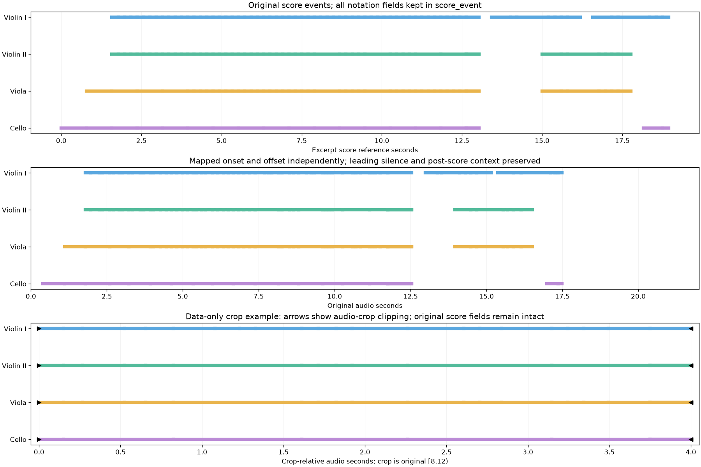
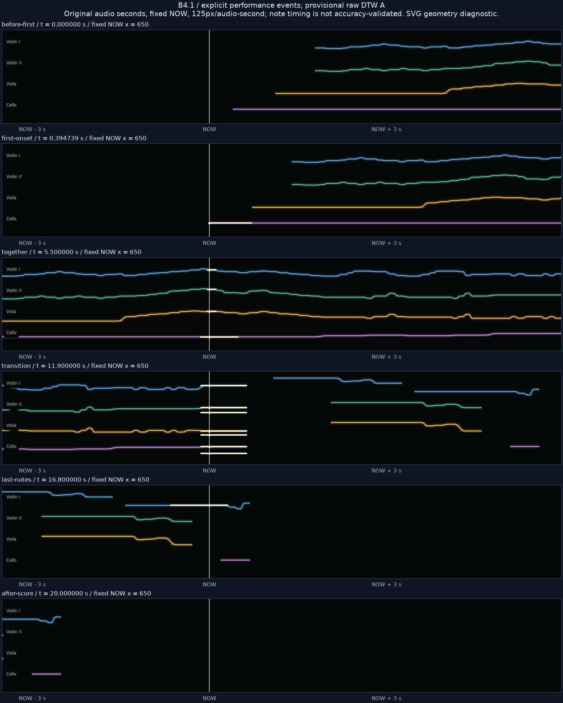

R/R RIBBON ROOM실험 기록 · 이전 결과를 보존한 검토 화면입니다. 새 그래픽 작업은 작업실에서 이어갑니다.
다른 실험 보기
B4.1 · 실제 연주 시계 변환 · 임시 기준
음표를 실제 연주 시간에 먼저 배치하기.
멘델스존 Op.80 I악장 · Musopen String Quartet. 기존 DTW A를 사용해 194개 음표의 시작·끝을 각각 변환했습니다. 원본 음표·beat·강약·ID는 별도로 보존합니다. 수동 정확도 측정은 보류 상태입니다.
준비 중…
연주 초에 음표를 미리 배치했으므로 화면은 일정한 속도로 흐릅니다. 발음 시각은 기존 DTW A와 같고, 브라우저에서 DTW 역함수로 전역 이동을 계산하지 않습니다. 이는 시간 좌표 변환 미리보기이며 물리효과는 적용하지 않았습니다.
악보·연주·발췌 시간 변환 그림

전체 음표의 변환 시각 · 이동 버튼
악보 초와 원본 연주 초를 구분합니다. 버튼을 누르면 해당 진입으로 이동하며 아래에 원본 음표 ID를 표시합니다.
여섯 시점의 리본 좌표 진단

연주 데이터의 score_event는 원본 음표의 모든 필드를 보존합니다. 연주 원본/발췌 시각과 잘림 플래그는 별도 필드입니다. 8–12초 발췌 예시는 데이터 검사이며 청취본은 원본 0–22초를 유지합니다.
정렬이 실제 연주와 얼마나 정확히 맞는지는 아직 확정하지 않았습니다. 기존 결과와 음원을 보존하고 임시 기준으로 다음 영상 실험을 준비했습니다.
연주 이벤트 JSON · 원본 악보 JSON · 전체 변환 CSV · 발췌 예시 JSON · 검증 · 출처 · 보고서